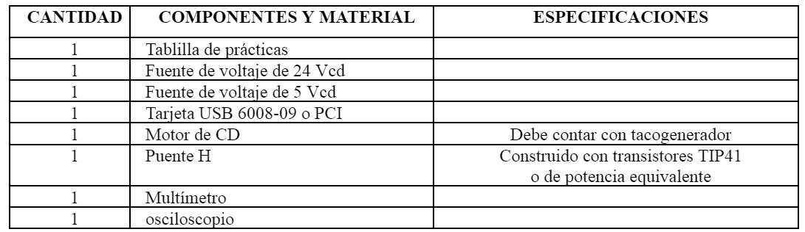
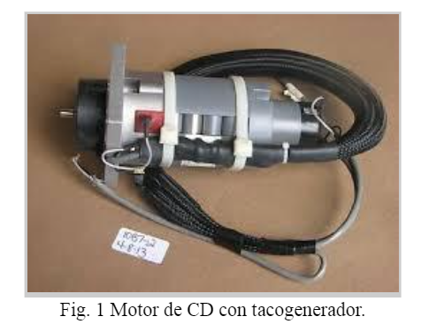
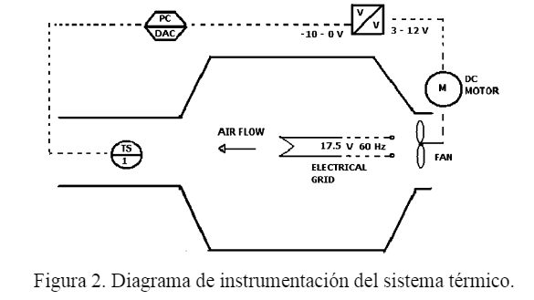

Tarea
1.-Identificación.

2.-Objetivo.
|
El alumno implementará un control óptimo de horizonte finito sobre la plataforma de Labview para un sistema electromecánico: motor de CD (modelo lineal). Se implementarán las dos técnicas: lazo abierto y lazo cerrado. El alumno calculará la ganancia del control óptimo mediante la resolución numérica del sistema adjunto. |
3.-Marco Teórico.
|
El desarrollo del marco teórico será dado en el aula por el profesor. El profesor deberá cubrir los siguientes aspectos:
Nota: Software de apoyo: Matlab y Lab View Tarjetas de adquisición recomendadas: USB 6008-09. |
4.- Medidas de Seguridad.
|
5.- Reactivos/insumos, materiales/utensilios y equipos.

6.-Procedimiento Para el Desarrollo de la Práctica.
|
1. En la primera parte de la práctica el objetivo es controlar óptimamente la velocidad de un motor de CD con tacogenerador (Fig. 1). Debe tomar en cuenta la relación de voltaje/RPM del motor, para caracterizar la linealidad del sensor. El modelo lineal del motor de CD con tacogenerador puede obtenerse mediante la respuesta al escalón y el osciloscopio. De esta forma se tienen los parámetros K y T. Se obtiene la representación espacio estado. 2. Ahora se calcula el control óptimo de horizonte finito resolviendo el sistema aumentado y se obtiene la matriz P(t) para la solución en lazo cerrado y solución en lazo abierto. Compare ambas alternativas mediante su respuesta: roce un poco la flecha del motor y verifique que la solución en lazo cerrado es más robusta que la otra. 3. En el programa en Labview, realice el conteo del tiempo mediante un ciclo While temporizado (Timed Loop) y el número de iteraciones. De esta forma tendrá disponible el tiempo de ejecución del programa para sustituir en el término P(t). Realice una interfaz adecuada en donde se despliegue la señal de control (control óptimo), el error, la velocidad en RPM del motor (trayectoria óptima) y sea posible proporcionar las matrices de penalización Q, R y el tiempo de convergencia tf. Debe agregar un botón de paro y arranque para el motor. Para el cálculo del término P(t) puede usar un Matlab script. Debe desplegar los datos en Matlab. 4. Calcule el Offset adecuado para que el motor continúe girando a la velocidad deseada por medio del cálculo del estado estacionario de la ecuación de estado y agregue este al control. 5. Realice varios experimentos con distintas penalizaciones de convergencia del estado, señal de control y tiempo de convergencia. Compare los resultados y discútalos en el reporte final. 6. Realice un frenado dinámico del motor, invierta el signo de la señal de control y realice comparaciones de la señal dada por el tacogenerador sin frenado dinámico y con frenado dinámico. Para esta parte el motor debe estar girando a velocidad constante y en cierto momento debe parar. 7. Realice los mismos pasos pero ahora para un proceso de térmico (Figura 2). Compare con el desempeño dado por un PID industrial de temperatura. Considere que este sistema tiene un retardo, el cual no será considerado para el diseño de la ley de control. Sin embargo, usted debe asegurar la estabilidad del lazo calculando las raíces de magnitud “pequeña” del sistema en lazo cerrado. 8. Realice un reporte de la práctica con comentarios individuales.   |
7.-Cuestionario.
|
1.- Mencione las ventajas de la solución en lazo abierto y lazo cerrado. 2. Diga cuales son las diferencias en la trayectoria y controles óptimos para distintas penalizaciones y tiempos de convergencia. 3. Reflexione y reporte sus conclusiones acerca del uso práctico del control óptimo. Conclusiones: Las anotaciones concluyentes serán realizadas individualmente por los alumnos en el reporte final. |
8.-Bibliografía.
|